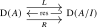

Almost ring theory (Faltings, Gabber–Ramero [Gabber and Ramero (2003)]) provides one of the most natural sources of dualizable categories which are not compactly generated. Throughout this section, let \(A\) be an (associative, unital) ring and let \(I \subseteq A\) be a two-sided ideal such that
- \(I^2 = I\), and
- \(I\) is flat as a right \(A\)-module.
We work with left \(A\)-modules, and write \(A\text {-}\Mod \) for the abelian category of left \(A\)-modules and \(\D (A)\) for its derived category.
The forgetful functor \((A/I)\text {-}\Mod \hookrightarrow A\text {-}\Mod \) is fully faithful, with essential image the \(A\)-modules \(M\) with \(IM = 0\). Since \(I^2 = I\), this subcategory is closed under extensions: if \(0 \to M' \to M \to M'' \to 0\) is exact with \(IM' = 0 = IM''\), then \(IM = I^2M \subseteq I M' = 0\). As it is clearly closed under subobjects and quotients, it is a Serre subcategory.
Definition 5.5. The category of \((A,I)\)-almost modules is the Serre quotient \[ (A,I)^a\text {-}\Mod := A\text {-}\Mod /(A/I)\text {-}\Mod . \]
- (1)
-
If \(I = A\), then \((A/I)\text {-}\Mod = 0\) and \((A,A)^a\text {-}\Mod = A\text {-}\Mod \).
- (2)
-
The motivating examples come from non-discrete valuation rings: let \(A\) be a valuation ring of rank one whose value group is not discrete, e.g. \(A = \Oo _{\C _p}\), and let \(I = \mm \) be its maximal ideal. Then \(\mm ^2 = \mm \), since every element of \(\mm \) is a product of two elements of \(\mm \), and \(\mm \) is flat since it is torsion-free over a valuation ring. An \(A\)-module is called almost zero if it is killed by \(\mm \); for instance, the residue field \(A/\mm \) becomes zero in the almost category. This is the setting of Faltings’ almost purity theorem in \(p\)-adic Hodge theory.
The derived picture
We have an adjoint triple 
Lemma 5.7. The functor \(\res \colon \D (A/I) \to \D (A)\) is fully faithful. In particular, \(L\) is a localization and \(A \to A/I\) is a homological epimorphism.
Proof.
As explained at the beginning of Section 5.1, it suffices to show that the multiplication map \(A/I \otimes ^{\bL }_A A/I \to A/I\) is an equivalence. Using the short exact sequence \(0 \to I \to A \to A/I \to 0\) of right \(A\)-modules, we find \begin {align*} \mathrm {Tor}^A_0(A/I,A/I) &= A/I, \\ \mathrm {Tor}^A_1(A/I,A/I) &\cong I/I^2 = 0, \\ \mathrm {Tor}^A_k(A/I,A/I) &\cong \mathrm {Tor}^A_{k-1}(I,A/I) = 0 \quad \text {for } k \geq 2, \end {align*}
where the last vanishing uses flatness of \(I\) as a right \(A\)-module. □
Lemma 5.8. The essential image of \(\res \colon \D (A/I) \hookrightarrow \D (A)\) is the full subcategory \[ \D _{(A/I)\text {-}\Mod }(A) := \{X \in \D (A) \mid IH_n(X) = 0 \text { for all } n \in \Z \} \] of complexes whose homology lies in the Serre subcategory \((A/I)\text {-}\Mod \). Moreover, the kernel of \(L\) consists of those \(X \in \D (A)\) with \(X \simeq I \otimes ^{\bL }_A X\), and \(I \otimes ^{\bL }_A X \in \ker (L)\) for every \(X \in \D (A)\).
Proof.
Since \(\res \) is fully faithful with left adjoint \(L\), its essential image consists of those \(X\) for which the unit \(X \to \res L(X)\) is an equivalence. Tensoring the short exact sequence \(0 \to I \to A \to A/I \to 0\) of \(A\)-bimodules with \(X\) gives a cofiber sequence \[ I \otimes ^{\bL }_A X \to X \to \res L(X), \] so \(X\) lies in the essential image if and only if \(I \otimes ^{\bL }_A X \simeq 0\). Since \(I\) is flat as a right module, \(H_n(I \otimes ^{\bL }_A X) \cong I \otimes _A H_n(X)\). Finally, for a left \(A\)-module \(M\), we have \(I \otimes _A M = 0\) if and only if \(IM = 0\): the multiplication map \(I \otimes _A M \to IM\) is surjective, and conversely if \(IM = 0\) then \(M\) is an \(A/I\)-module and \(I \otimes _A M \cong (I \otimes _A A/I) \otimes _{A/I} M \cong I/I^2 \otimes _{A/I} M = 0\).
For the second statement, \(L(I \otimes ^{\bL }_A X) \simeq (A/I \otimes ^{\bL }_A I) \otimes ^{\bL }_A X\), and \(A/I \otimes ^{\bL }_A I \simeq \fib (A/I \to A/I \otimes ^{\bL }_A A/I) \simeq 0\) by Lemma 5.7. The characterization of \(\ker (L)\) follows from the cofiber sequence above. □
Proposition 5.9. There is an equivalence \[ \D ((A,I)^a\text {-}\Mod ) \simeq \ker \big (L\colon \D (A) \to \D (A/I)\big ), \] and \(\ker (L) = \D (A \to A/I)\) is dualizable. More precisely, \(\D ((A,I)^a\text {-}\Mod ) \hookrightarrow \D (A) \xrightarrow {L} \D (A/I)\) is a strongly continuous localization sequence, and \(\D ((A,I)^a\text {-}\Mod )\) is also the kernel of \(L\) computed in \(\Pr ^{\dual }\).
Proof.
Since \((A/I)\text {-}\Mod \subseteq A\text {-}\Mod \) is a Serre subcategory of a Grothendieck abelian category which is closed under colimits, the derived category of the Serre quotient is the Verdier quotient \[ \D ((A,I)^a\text {-}\Mod ) \simeq \D (A)/\D _{(A/I)\text {-}\Mod }(A). \] Indeed, the quotient functor \(A\text {-}\Mod \to (A,I)^a\text {-}\Mod \) is exact and has a fully faithful right adjoint, and for such functors this identification is proved in [Krause (2010), Section 7.7]; see also [Efimov (2024), Example 2.26]. It thus remains to identify the Verdier quotient \(\D (A)/\D _{(A/I)\text {-}\Mod }(A)\) with \(\ker (L)\). Consider the functor \(q := I \otimes ^{\bL }_A -\colon \D (A) \to \ker (L)\), which lands in \(\ker (L)\) by Lemma 5.8. For \(K \in \ker (L)\) and \(X \in \D (A)\), applying \(\Map (K,-)\) to the cofiber sequence \(I \otimes ^{\bL }_A X \to X \to \res L(X)\) and using \(\Map (K,\res L X) \simeq \Map (LK,LX) \simeq *\) shows that \(\Map (K,qX) \iso \Map (K,X)\). So \(q\) is right adjoint to the fully faithful inclusion \(\ker (L) \hookrightarrow \D (A)\), and hence \(q\) exhibits \(\ker (L)\) as the localization of \(\D (A)\) at the morphisms inverted by \(q\) [Lurie (2009), Proposition 5.2.7.12]. Since \(q\) is exact, these are the morphisms whose cofiber lies in \(\ker (q)\), which is \(\D _{(A/I)\text {-}\Mod }(A)\) by Lemma 5.8. Hence \(\ker (L) \simeq \D (A)/\D _{(A/I)\text {-}\Mod }(A)\).
By Proposition 5.1 and Lemma 5.7, \(\ker (L)\) is dualizable and its inclusion into \(\D (A)\) is strongly continuous; explicitly, its right adjoint is \(X \mapsto I \otimes ^{\bL }_A X\) by Lemma 5.8. To see that \(\ker (L)\) is also the kernel in \(\Pr ^{\dual }\), let \(E\) be dualizable and \(F\colon E \to \D (A)\) strongly continuous with \(LF \simeq 0\). Then \(F\) factors uniquely through a colimit-preserving functor \(F'\colon E \to \ker (L)\), and \(F'\) is strongly continuous since its right adjoint is the composite of the colimit-preserving functors \(\ker (L) \hookrightarrow \D (A) \xrightarrow {F^R} E\). □
Remark 5.10. In the talk, the last part of Proposition 5.9 was deduced from the general fact that the inclusion \(\Pr ^{\dual } \hookrightarrow \PrL _{\st }\) preserves pullbacks along localizations (Proposition 7.21(2)). Efimov [Efimov (2024), Example 2.26] shows that \(\D ((A,I)^a\text {-}\Mod )\) is dualizable even without any flatness assumption on \(I\): in general, \(\D (A) \to \D _{(A/I)\text {-}\Mod }(A)\) is still a strongly continuous localization, identified with \(B \otimes _A -\) for a connective DG ring \(B\) with \(H_0(B) = A/I\), and \(B = A/I\) if \(I\) is flat as a right or left \(A\)-module.
The following is a special case of Keller’s example (Example 2.20), and shows that almost module categories are typically very far from being compactly generated.
Proposition 5.11. If \(I \subseteq \mathrm {Jac}(A)\) is contained in the Jacobson radical of \(A\), then \(\D ((A,I)^a\text {-}\Mod )\) has no nonzero compact objects.
Proof.
By Proposition 5.9, the inclusion \(\ker (L) \hookrightarrow \D (A)\) is strongly continuous and hence preserves compact objects. So it suffices to show: if \(P \in \Perf (A)\) satisfies \(A/I \otimes ^{\bL }_A P \simeq 0\), then \(P \simeq 0\).
Suppose \(P \neq 0\) and let \(n\) be minimal with \(H_n(P) \neq 0\). We may represent \(P\) by a bounded complex of finitely generated projective modules concentrated in homological degrees \(\geq n\): starting from any bounded complex \(P_\bullet \) of finitely generated projectives, if \(a < n\) is the lowest degree with \(P_a \neq 0\), then \(P_{a+1} \to P_a\) is surjective as \(H_a(P) = 0\), hence split, and we may replace \(P_{a+1}\) by its kernel (again finitely generated projective) and remove \(P_a\). In this representation, \(H_n(P) = \coker (P_{n+1} \to P_n)\) is a finitely generated \(A\)-module, and by right exactness of the tensor product \[ 0 = H_n(A/I \otimes ^{\bL }_A P) \cong A/I \otimes _A H_n(P) \cong H_n(P)/IH_n(P). \] So \(H_n(P) = IH_n(P) \subseteq \mathrm {Jac}(A)H_n(P)\), and Nakayama’s lemma implies \(H_n(P) = 0\), a contradiction. □
Example 5.12. In the situation of Example 5.6(2), \(A = \Oo _{\C _p}\) is local with maximal ideal \(\mm = \mathrm {Jac}(A)\). Hence \(\D ((\Oo _{\C _p},\mm )^a\text {-}\Mod )\) is a dualizable category without nonzero compact objects.
Hilbert-space models for operator ideals
Proposition 5.13. Let \(A = B(\Hh )\) for a separable infinite-dimensional complex Hilbert space, and let \(J\) be either \(\Kk (\Hh )\) or \(S_{0+} = \bigcap _{p>0} S_p(\Hh )\). Let \(E\) be the additive category of separable complex Hilbert spaces and bounded linear maps, with the split exact structure, and put \(D = \Ind (\D ^b(E))\). Then \(A \to A/J\) is a homological epimorphism. Under Morita theory, its kernel identifies with the full stable subcategory \(C_J \subseteq D\) generated under colimits by sequences of Hilbert spaces whose transition maps belong to \(J\). Here membership in \(J\) means compactness, respectively membership in every Schatten class, also for operators between different Hilbert spaces.
The completed Hilbert tensor product restricts to a symmetric monoidal structure on \(C_J\) whose unit and multiplication functors are strongly continuous. In particular, \(C_J \in \CAlg (\Pr ^{\dual })\).
The proof separates the algebraic and categorical steps. Positive operators provide cofinal principal left ideals and root factorizations; these establish flatness and idempotence and identify the kernel by telescopes. The last step checks strong continuity of the restricted tensor product through its right adjoint.
Proof.
We use right \(A\)-modules in this proof. Every separable Hilbert space is a retract of \(\Hh \), and every bounded idempotent has closed image. Hence \(V \mapsto \Hom _E(\Hh ,V)\) identifies \(E\) with the finitely generated projective right \(A\)-modules, and \(D\) with their unbounded derived category. To recover our left-module convention, choose a conjugation \(c\) on \(\Hh \): the complex-linear transpose \(a \mapsto ca^*c\) identifies \(A\catop \) with \(A\) and preserves both ideals. The intrinsic category \(C_J\) itself does not require this choice.
We first record a factorization fact: given countably many \(a_n \in J\), there is a positive injective \(d \in J\) with \(a_n \in dA\) for every \(n\). Include a fixed positive injective operator in \(J\) among the \(a_n\), and choose \(\lambda _n > 0\) sufficiently small that \[ s = \sum _n \lambda _n a_na_n^* \] converges in operator norm and, when \(J = S_{0+}\), in every Schatten quasi-norm \(\|{-}\|_{1/m}\), \(m \geq 1\). Such a choice is possible by imposing the first \(n\) quasi-norm bounds on the \(n\)th summand, with summable bounds in the corresponding quasi-norm metrics. Then \(s\) is positive and injective and belongs to \(J\), as does \(d=s^{1/2}\). Since \(a_na_n^* \leq \lambda _n^{-1}s\), the map \(dx \mapsto a_n^*x\) is bounded on the dense image of \(d\). Extending it to \(\Hh \) and taking adjoints gives \(a_n = db_n\) with \(b_n \in A\).
Consequently, \(J\) is the directed union of the right ideals \(dA\) with \(d \in J\) positive and injective. Each \(dA\) is a free right module of rank one, so \(J\) is flat on the right. Also \(J^2=J\): polar decomposition writes \(a=u|a|^{1/2}|a|^{1/2}\) with both factors in \(J\). Both ideals are closed under positive square roots; for \(S_{0+}\) this follows directly from the definition by singular values. The Tor calculation in Lemma 5.7 now shows that \(A \to A/J\) is a homological epimorphism.
For a positive injective \(d \in J\), put \[ T_d = \bigcup _{n\geq 0} d^{1/2^n}A \subseteq J. \] Under the identifications \(d^{1/2^n}A \cong A\), this is the sequential colimit of free modules with transition maps given by left multiplication by \(d^{1/2^{n+1}} \in J\). The family of submodules \(T_d\) is directed: apply the factorization fact to all the roots of two given operators to obtain \(e\) with both submodules contained in \(eA \subseteq T_e\). It covers \(J\), so \(J\) is a filtered colimit of such telescopes.
Let \(L = - \otimes _A^{\bL } A/J\), and let \(C = \ker (L)\). Its inclusion \(i\colon C \to D\) has the colimit-preserving right adjoint \(r(M)=M\otimes _A^{\bL }J\). This follows by tensoring the fiber sequence \(J \to A \to A/J\) with \(M\) and using that \(L\) is a localization. Since \(D\) is generated as a stable category under colimits by \(A\), the category \(C\) is generated in the same sense by \(r(A)=J\). Every \(J\)-transition telescope lies in \(C\), because applying \(L\) gives a sequence with zero transition maps, whose colimit is zero. Conversely, the preceding expression for \(J\) as a filtered colimit of the \(T_d\) puts \(J\) in the stable subcategory generated by these telescopes. Thus \(C=C_J\).
The completed Hilbert tensor product extends to a colimit-preserving multiplication \(\mu _D\colon D\otimes D\to D\). It preserves compact objects: it sends pairs of Hilbert spaces to Hilbert spaces, and compact objects are obtained from these by finite stable operations and retracts. Thus \(\mu _D^R\) preserves colimits. Tensor products of two \(J\)-transition telescopes again have \(J\)-transitions, using the cofinal diagonal in \(\N \times \N \). For \(S_{0+}\), the relevant assertion follows from \[ \sum _{i,j}(s_i(a)s_j(b))^p =\left (\sum _i s_i(a)^p\right )\left (\sum _j s_j(b)^p\right )<\infty \] for every \(p>0\); for compact operators it follows by finite-rank approximation. Hence the tensor product restricts to \(C_J\). The unit \(\C \) belongs to \(C_J\), since its identity has finite rank, and is compact there because it is compact in \(D\) and the inclusion preserves colimits.
Finally, \(i\otimes i\) has right adjoint \(r\otimes r\): the adjunction \(i\dashv r\) is an adjunction between colimit-preserving functors, so it can be tensored. The restricted multiplication has right adjoint \[ \mu _{C_J}^R = (r\otimes r)\mu _D^R i, \] as follows by applying these adjunctions to mapping spectra. All three functors preserve colimits. The unit functor is strongly continuous by compactness of \(\C \), and \(C_J\) is dualizable by Proposition 5.1. This proves the last assertion. □